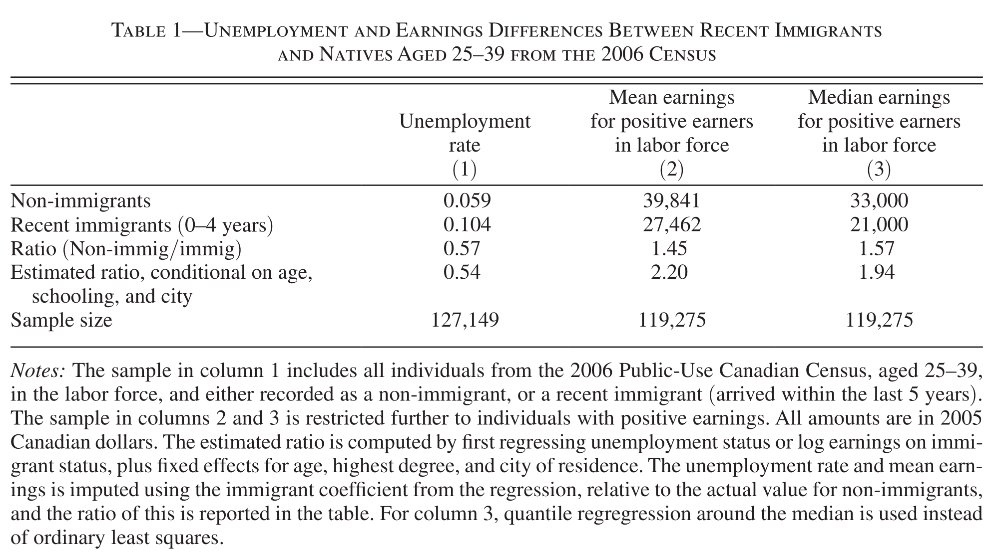
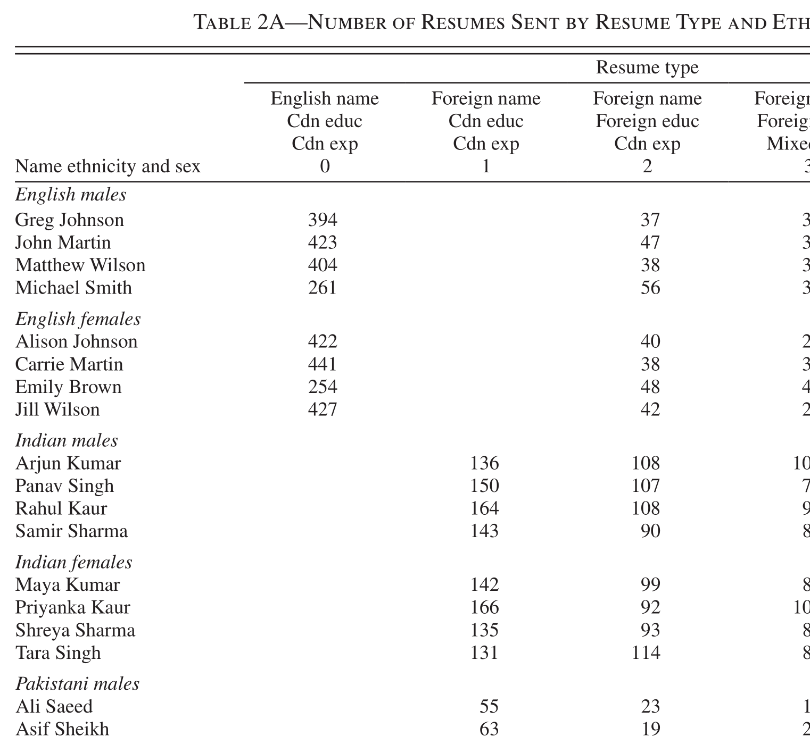
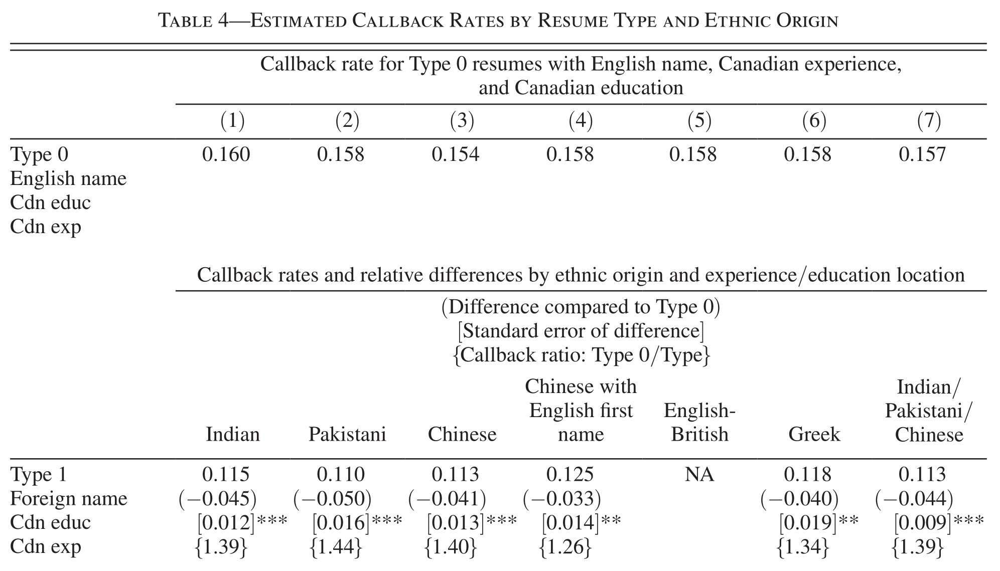

ECON 2B03, Winter 2026
Part A | Lecture 1
Chris Muris, McMaster University
R, Positron, and Posit CloudR and PositronR


.zip on A2L for detailed instructions, and see labs.qmd and .pdf via A2LRWe use R, Positron, and quarto in this course.
R is a programming language for statistical computing and graphics
Positron is an Integrated Development Environment (IDE) for R
quarto is a system for producing documents from code
Posit Cloud is an online version of R and a similar IDE
Use Posit Cloud if you run into any installation problems
We will troubleshoot your system meanwhile
.zip file, and unzip it into a project folderR, Positron on your own system (see next slide)PositronR and Positron on your own device:
quarto via quarto.orgtidyverse package (see A0)R:These slides started from J. S. Racine’s slides for ECON2B03 at McMaster University.
Readings are from
References
Oreopoulos, Philip (2011), “Why Do Skilled Immigrants Struggle in the Labor Market? A Field Experiment with Thirteen Thousand Resumes.” American Economic Journal: Economic Policy 3(4).